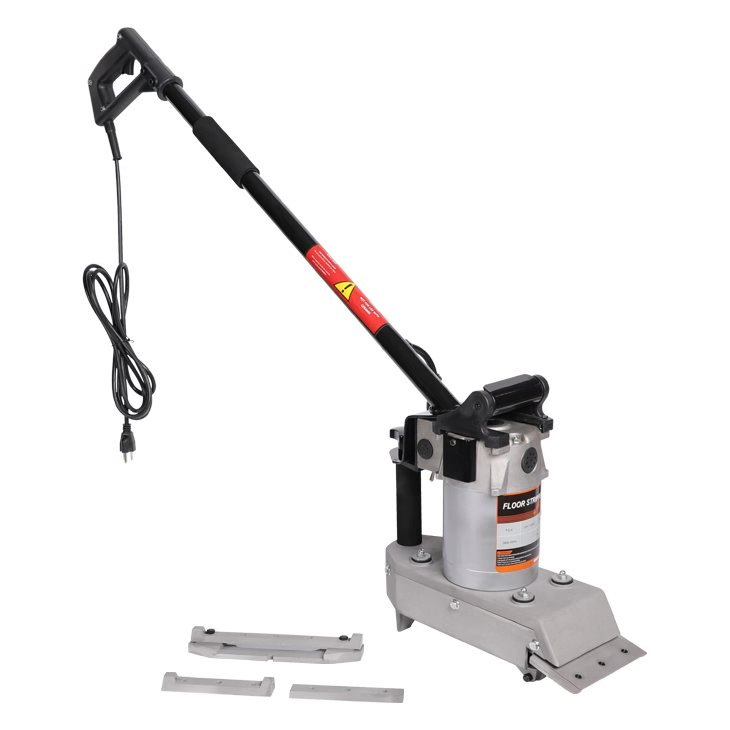

Start / Abbruch- & Stemmtechnik / Meißelfett / Meißelhammerpaste, 400-g-Kartusche (Lithiumkomplexfett)

Abbruch- & Stemmtechnik
Meißelfett / Meißelhammerpaste, 400-g-Kartusche (Lithiumkomplexfett)
Meißelfett schützt das Einsteckende und die Führungsbuchse von Stemm-, Abbruch- und Aufbruchhämmern vor Verschleiß und Fressen. Die Lithiumkomplex-Basis hält hohen Flächenpressungen und Temperaturen stand; Festschmierstoffe wie MoS2 oder Kupfer, wie sie bei Meißelpasten üblich sind, bilden zusätzlich einen Trockenschmierfilm.
Technische Daten
| Inhalt | 400 g Kartusche |
|---|---|
| Festschmierstoffe | Optional MoS2 und/oder Kupfer (Meißelpaste) |
| Einsatz | Einsteckenden von Meißeln und Verschleißbuchsen an Elektro-, Druckluft- und Hydraulikhämmern |
| Zolltarifnummer (HS) | 34031980 |
EU-Normen und Vorschriften
DIN 51818Schmierstoffe: Konsistenz-Einteilung für Schmierfette (NLGI-Klassen)DIN 51825Schmierfette K: Einteilung und AnforderungenISO 6743-9Klassifikation der Schmierstoffe, Familie X (Schmierfette)CLP (EG) 1272/2008Einstufung, Kennzeichnung und Verpackung von Gemischen; ggf.; UFI-CodeREACH (EG) 1907/2006VerpackG / LUCIDVerpackungsregistrierung (LUCID) und Systembeteiligung für Karton, Hängekarte, Folie
Passt dazu
SDS-max-Meißelset 3-teilig (Spitz-, Flach- und Breitmeißel, 400 mm)
Sechskant-Meißelset 30 mm für Abbruchhämmer (Spitz-, Flach- und Spatmeißel, 410 mm)
Elektro-Stemmhammer SDS-max, 5–11 kg (1.100–1.500 W)Handlicher SDS-max-Meißelhammer für Fliesen-, Putz-, Estrich- und Mauerwerksabbruch im Innenausbau und Rückbau.
Elektro-Abbruchhammer 15 kg, 30-mm-Sechskant
Elektro-Abbruchhammer 35 kg, 2.000 W, Sechskant (Schwerklasse)
Drucklufthammer (Aufbruchhammer) 20 kg, 5–6,3 bar
Elektro-Stemmhammer 10 kg, SDS-max, 1.500 WMittelschwerer SDS-max-Stemmhammer für Beton-, Mauerwerks- und Estrichabbruch sowie Schlitze und Durchbrüche im Rückbau.
Weitere Produkte dieser Kategorie
Diamant-Kernbohrgerät 250 mm mit Bohrständer
Fahrbarer Diesel-Schraubenkompressor ca. 5 m³/min (185 cfm), 7 barFahrbarer Baukompressor mit Dieselantrieb als Druckluftquelle für Drucklufthämmer und Strahl- und Bohrgeräte auf Baustellen ohne Netzanschluss.
Diamant-Seilsägemaschine, elektrisch, für Beton und StahlbetonElektrische Seilsägemaschine zum erschütterungsarmen Zertrennen von Stahlbeton-Bauteilen beliebiger Größe.
Passives Schulter-/Arm-Exoskelett für ÜberkopfarbeitFederunterstütztes Exoskelett ohne Akku, das die Arme bei Arbeiten über Schulterhöhe entlastet.
Elektro-Stemmhammer 5 kg, 1.100 W (Leichtklasse)Leichter Stemmhammer für Fliesen-, Putz- und Estricharbeiten im Innenausbau – gut zu führen und ermüdungsarm.
Autogen-Schneidgarnitur (Brennergarnitur) komplett, Acetylen/SauerstoffKomplettgarnitur zum Brennschneiden von Stahl: Schneidbrenner, Druckminderer für Sauerstoff und Brenngas, Schläuche und Box.
Hydraulische Abbruchschere für Stahlträger (Bagger-Anbaugerät)Hydraulische Schere als Bagger-Anbaugerät zum Zerteilen von Stahlträgern, Profilen und Rohren im Rückbau.
Stemmhalterung / Hammer-Halterungsgestell für AbbruchhämmerStahlgestell, das den schweren Abbruchhammer abstützt und führt – entlastet Arme und Rücken beim Boden- und Wandstemmen.
Diamant-Nassbohrkrone Ø 250 mm, Aufnahme 1 1/4″ UNC, Nutzlänge 450 mmNass-Diamantbohrkrone Ø 250 mm mit 1 1/4″-7-UNC-Anschluss und 450 mm Nutzlänge für Stahlbeton, das Verschleißteil des Kernbohrgeräts.
Wasserkanone / Staubbindemaschine (Nebelkanone) für Abbruch, 25–30 m Wurfweite, 3,5 kW, 36 DüsenGebläse-Nebelkanone mit 36 Edelstahldüsen, 25–30 m Wurfweite und 340° Schwenkbereich: bindet Abbruch-, Brech- und Umschlagstaub mit 15–18 l Wasser pro Minute.
SDS-plus-Fliesenmeißel, gehärtetWechselwerkzeug für Bohrhämmer zum Abschlagen von Fliesen und Putz.
Stahl-Spaltkeil mit Beilagen für Stein und BetonHandwerkzeug zum kontrollierten Spalten von Naturstein und Beton.
Druckluft-Schlauchaufroller mit Federrückzug, Stahl, 10 mWandmontierter Aufroller mit automatischem Einzug für Druckluftschlauch.
Federzug-Werkzeugbalancer 22-30 kgAufhängbarer Federzug, der das Werkzeuggewicht ausgleicht.
Hydraulischer Gesteins-/Betonspalter, abschleppbarHydraulischer Spalter für erschütterungsfreien Abbruch von Beton und Fels.

Elektrischer Bodenschaber, geführt, für Teppich und FliesenGeführter Schaber zum Entfernen von Teppich, Fliesen und Belägen.